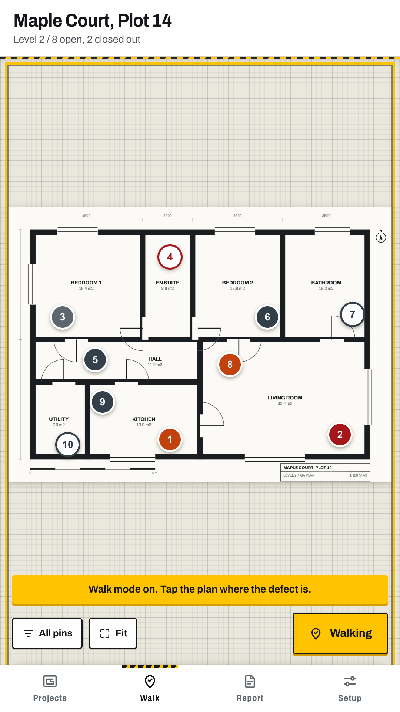
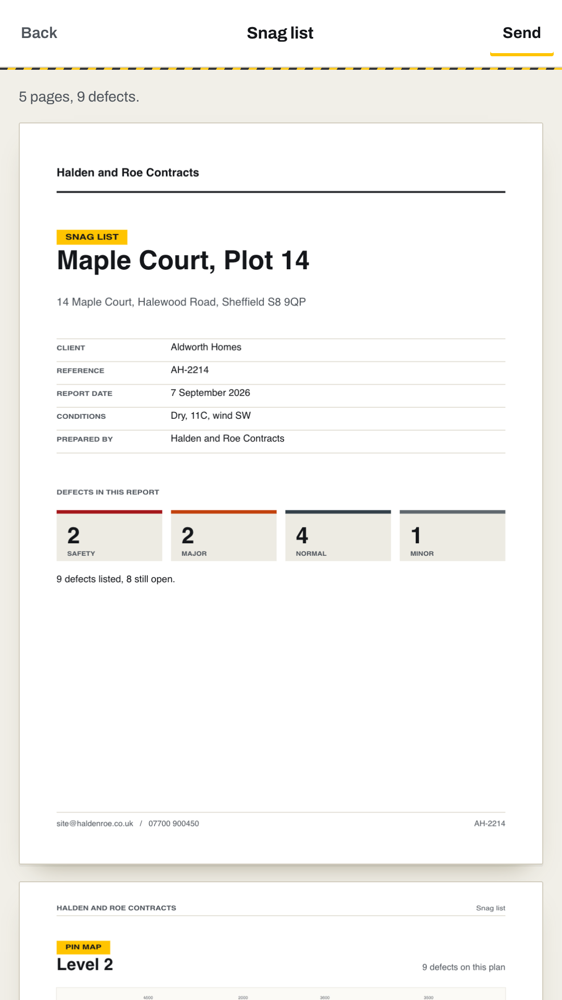
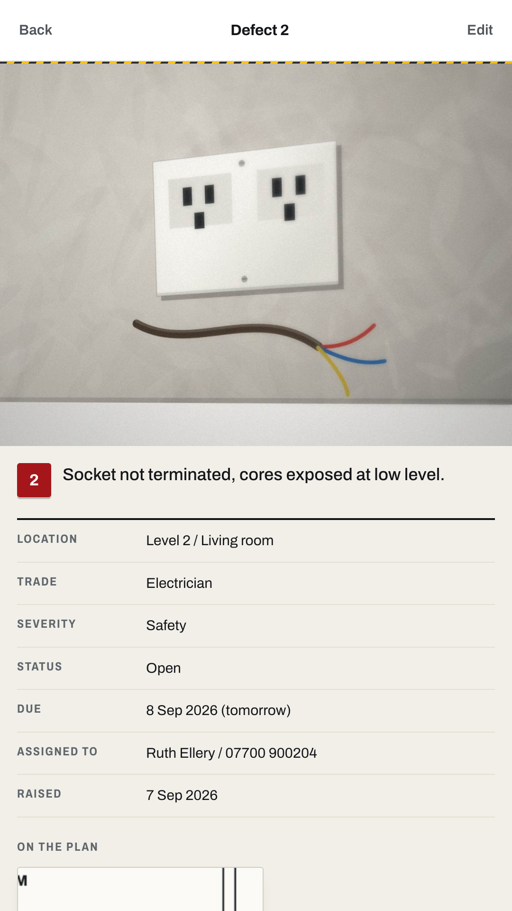

A site walk produces forty defects and one problem: turning them into something a trade will act on. Punchlist does that on the walk, in a basement, with no signal.
Get it on Google Play
Load the floorplan, tap where the problem is. The pin lands where you put it and keeps its number for the rest of the defect's life.
The camera opens straight away. The photo attaches to the pin, not to a camera roll you will have to match up later.
Nineteen trades built in, four severities, a room and a due date. Then you are back on the plan and moving.

Punchlist writes the PDF itself, on the phone. A branded cover with your logo and the project details. A plan page per floor with every pin numbered and placed. Then one entry per defect with its photo, trade, severity, room, due date and history.
Group it by room, by trade or by severity. Send the whole thing, or send one trade only their pages, straight into WhatsApp or email.
Every change is stamped and kept. So the report you send in week six can show that the plasterer was told in week two, which is usually the whole argument. Each defect keeps its photographs, the crop of the plan that shows where it is, who it went to and when it moved.

Punchlist does not request the internet permission. That is why it works in a lift shaft or a plant room, and why nothing about your client's site can leak from it. There is no account, no sync and no server to trust.
Projects, plans, photos and reports live on the phone until you share them. Export everything as a file whenever you want, and keep it wherever your job files live.
Free. No per-project charge, no seat licence, and nothing of ours on your report.
Get it on Google Play